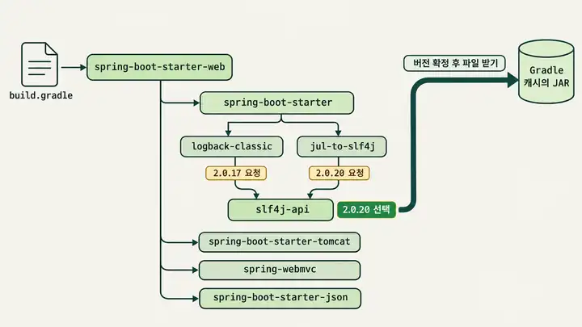
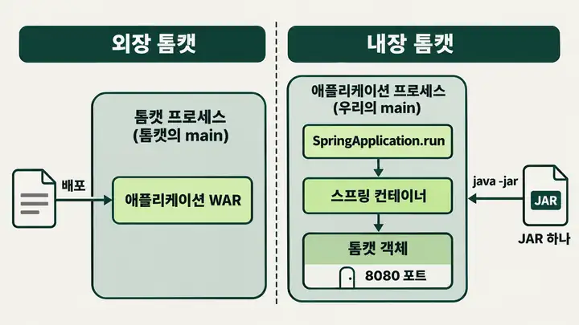
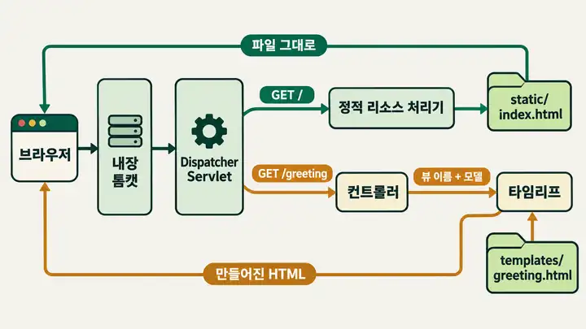
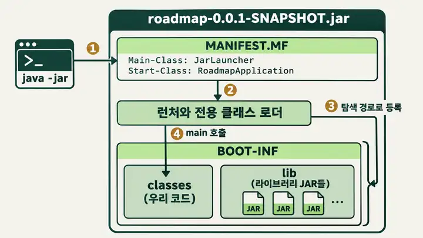

스프링 입문 / 01회
프로젝트 환경설정 — 빌드, 라이브러리, 실행
start.spring.io가 만든 파일 몇 개가 Gradle의 의존성 해석, 스프링 부트 런처, 내장 톰캣을 거쳐 8080 포트를 여는 프로세스가 되기까지를 실제 빌드와 실행 결과로 추적한다.
오늘 끝나면 할 수 있는 것
build.gradle의 각 블록이 Gradle의 어느 단계에서 무슨 일을 하는지 설명하고,./gradlew build가 출력하는 태스크 목록을 순서대로 읽을 수 있다.- 스타터 한 줄이 수십 개의 JAR로 펼쳐지는 과정을 좌표, 메타데이터, 전이 의존성, 버전 선택의 순서로 설명하고, 버전을 적지 않아도 되는 이유를 BOM으로 말할 수 있다.
SpringApplication.run한 줄이 내장 톰캣을 만들고 포트를 여는 과정을, 스프링 없이 톰캣을new로 띄우는 코드와 연결해 설명하고, main 메서드가 끝난 뒤에도 프로세스가 살아 있는 이유를 스레드로 설명할 수 있다.- 웰컴 페이지와 템플릿 뷰가 클래스패스의 어느 위치에서 어떤 규칙으로 찾아지는지 말하고, 정적 파일과 템플릿의 처리 경로 차이를 구분할 수 있다.
- 일반 JAR, 우버 JAR, 스프링 부트 실행 가능한 JAR의 구조를 비교하고,
java -jar가 중첩된 JAR 안의 클래스에 닿기까지의 경로를 추적할 수 있다.
핵심 강의 → 핵심 요약 → 실무 재판단 → 적용 연습 → 이해 확인
01 핵심 강의
이 강의의 차례 · 소제목 13개
- 이 회차의 질문: 열 줄짜리 클래스가 어떻게 웹 서버가 되는가
- 프로젝트 생성: start.spring.io가 하는 일은 파일 몇 개를 만들어 주는 것이다
- build.gradle 읽기: Gradle은 이 파일을 실행한다
- 라이브러리 살펴보기 ①: 한 줄의 좌표가 그래프가 되는 과정
- 라이브러리 살펴보기 ②: 스타터 두 개가 끌고 오는 것
- 실행 ①: main 메서드 한 줄이 하는 일
- 실행 ②: 내장 톰캣, 서버는 main이 만드는 객체다
- View 환경설정 ①: 웰컴 페이지와 클래스패스 리소스
- View 환경설정 ②: 템플릿 엔진과 뷰 이름
- 빌드하고 실행하기 ①: JAR와 java -jar의 규칙
- 빌드하고 실행하기 ②: 스프링 부트의 실행 가능한 JAR
- 흔한 오해와 함정
- 이 회차의 지도와 다음 회차
이 회차의 질문: 열 줄짜리 클래스가 어떻게 웹 서버가 되는가
자바 중급까지의 프로그램은 실행 방식이 단순했다. 소스 파일을 javac로 컴파일하면 .class 파일이 생기고, java 명령에 main 메서드가 있는 클래스 이름을 주면 JVM이 그 클래스를 로드해 main을 실행한다. 쓰는 클래스는 직접 만든 것과 JDK에 들어 있는 것뿐이었고, main이 마지막 줄까지 실행되면 프로세스도 끝났다.
스프링 부트 프로젝트를 처음 만들어 실행하면 이 그림이 맞지 않는다. 직접 가진 자바 파일은 열 줄 남짓한 클래스 하나인데, 실행하면 8080번 포트에서 HTTP 요청을 받는 서버가 뜬다. main 메서드는 잠시 뒤에 끝나지만 프로세스는 꺼지지 않는다. 그리고 빌드 명령 한 번이면 이 서버 전체가 파일 하나로 묶여 나온다. 이 회차는 이 세 가지 낯선 일을 차례로 풀어낸다.
- 열 줄짜리 클래스가 쓰는 그 많은 코드는 어디에서 왔는가. 답은 빌드 도구(build tool)와 의존성 해석(dependency resolution)에 있다.
- 포트를 열고 요청을 기다리는 것은 누구이며, main이 끝난 뒤에도 프로세스가 사는 이유는 무엇인가. 답은 내장 톰캣(embedded Tomcat)과 스레드에 있다.
- 이 프로그램을 JDK만 설치된 다른 컴퓨터로 옮겨 실행하려면 무엇을 가져가야 하는가. 답은 실행 가능한 JAR(executable JAR)의 구조에 있다.
대응하는 섹션의 수업은 프로젝트 생성, 라이브러리 살펴보기, View 환경설정, 빌드하고 실행하기 네 개다. 이 순서를 그대로 따라가되, 각 단계에서 화면에 보이는 것보다 한 층 아래에서 일어나는 일을 본다. 전체 흐름을 먼저 한 장으로 그려 두면 다음과 같다.
[프로젝트의 파일] [빌드: Gradle] [실행: JVM 프로세스]
build.gradle ───────────▶ ① 의존성 해석 (좌표 한 줄 → JAR 수십 개)
RoadmapApplication.java ─▶ ② 컴파일 (javac)
static/, templates/ ────▶ ③ 리소스 복사
④ 묶기 ──▶ roadmap-0.0.1-SNAPSHOT.jar ──▶ java -jar
│
⑤ 런처가 중첩 JAR용 클래스 로더를 만든다
│
⑥ SpringApplication.run 이 스프링 컨테이너를 만든다
│
⑦ 컨테이너가 톰캣 객체를 만들고 8080 포트를 연다
│
⑧ 톰캣의 작업 스레드가 요청을 받아 정적 파일이나 템플릿으로 응답한다
프로젝트 생성: start.spring.io가 하는 일은 파일 몇 개를 만들어 주는 것이다
스프링 부트 프로젝트는 보통 Spring Initializr(start.spring.io)에서 시작한다. 이 사이트가 하는 일은 특별하지 않다. 웹 화면에서 고른 값을 텍스트 파일 몇 개에 채워 넣고, 표준 디렉터리 구조와 함께 zip으로 내려 준다. 설치되는 것도, 등록되는 것도 없다. 따라서 생성된 파일을 읽을 수 있으면 화면에서 고른 항목이 각각 어떤 결과를 낳는지 전부 알 수 있다.
| 화면의 항목 | 고르는 값 | 이 값이 가는 곳 |
|---|---|---|
| Project | Gradle - Groovy | 빌드 도구와 빌드 스크립트의 언어. build.gradle, settings.gradle, Gradle 래퍼 파일이 생긴다 |
| Language | Java | 소스 디렉터리 src/main/java |
| Spring Boot | 뒤에 (SNAPSHOT)이나 (RC)가 붙지 않은 버전 | build.gradle의 org.springframework.boot 플러그인 버전 |
| Group | com.example | build.gradle의 group, 기본 패키지 이름의 앞부분 |
| Artifact | roadmap | settings.gradle의 프로젝트 이름, 빌드 결과 JAR의 파일 이름 |
| Packaging | Jar | 이 회차 끝에서 볼 실행 가능한 JAR로 묶는다 |
| Java | 21 | build.gradle의 자바 툴체인 버전 |
| Dependencies | Spring Web, Thymeleaf | build.gradle의 dependencies 블록에 스타터 두 줄 |
버전 목록에서 (SNAPSHOT)은 아직 개발 중이어서 같은 버전 이름으로 내용이 계속 바뀌는 빌드이고, (RC)는 출시 후보(release candidate)다. 학습용 프로젝트는 아무것도 붙지 않은 정식 배포 버전을 고른다. 자바 버전은 설치된 JDK와 맞춘다. 이 강좌는 JDK 21을 기준으로 한다.
내려받은 zip을 풀면 다음 구조가 나온다. 보조 파일(.gitignore 등)은 생략했다.
roadmap/
├── build.gradle 빌드 스크립트: 플러그인, 저장소, 의존성
├── settings.gradle rootProject.name = 'roadmap'
├── gradlew, gradlew.bat Gradle 래퍼 실행 스크립트 (유닉스용, 윈도우용)
├── gradle/wrapper/
│ ├── gradle-wrapper.jar 래퍼 본체. 정해진 버전의 Gradle을 내려받아 실행한다
│ └── gradle-wrapper.properties 내려받을 Gradle 배포판의 주소
└── src/
├── main/
│ ├── java/com/example/roadmap/RoadmapApplication.java main 메서드가 있는 클래스
│ └── resources/
│ ├── application.properties 설정 파일 (처음에는 거의 비어 있다)
│ ├── static/ 정적 파일을 둘 곳
│ └── templates/ 템플릿 파일을 둘 곳
└── test/
└── java/com/example/roadmap/RoadmapApplicationTests.java 테스트 클래스
여기서 스프링이 정한 것과 Gradle이 정한 것을 구분해 두자. src/main/java, src/main/resources, src/test/java라는 디렉터리 배치는 스프링이 아니라 Gradle의 java 플러그인이 정한 관례다. 이 관례를 따르면 "어디에 소스가 있고 어디에 리소스가 있는지"를 빌드 스크립트에 적지 않아도 된다. 반대로 resources 아래의 static과 templates라는 이름, application.properties라는 파일 이름은 스프링 부트가 정한 관례다. static과 templates 디렉터리가 없다면 직접 만들어도 결과는 같다.
직접 실행할 자바 코드는 RoadmapApplication.java 하나다. 내용은 다음이 전부다.
package com.example.roadmap;
import org.springframework.boot.SpringApplication;
import org.springframework.boot.autoconfigure.SpringBootApplication;
@SpringBootApplication
public class RoadmapApplication {
public static void main(String[] args) {
SpringApplication.run(RoadmapApplication.class, args);
}
}이 클래스는 JDK에 없는 SpringApplication과 SpringBootApplication을 import한다. 이 두 이름이 들어 있는 JAR이 컴파일할 때와 실행할 때 모두 클래스패스에 있어야 한다는 뜻이다. 그 JAR을 어디에서 가져와 어디에 두는지를 정하는 파일이 build.gradle이다.
build.gradle 읽기: Gradle은 이 파일을 실행한다
아래는 Spring Boot 3.5.16에 맞춰 적은 build.gradle이다. 플러그인, 툴체인, 저장소 블록의 구조는 오늘 start.spring.io가 4.1.2용으로 생성하는 파일과 같고, 플러그인 버전과 dependencies 블록의 스타터 이름이 다르다.
plugins {
id 'java'
id 'org.springframework.boot' version '3.5.16'
id 'io.spring.dependency-management' version '1.1.7'
}
group = 'com.example'
version = '0.0.1-SNAPSHOT'
java {
toolchain {
languageVersion = JavaLanguageVersion.of(21)
}
}
repositories {
mavenCentral()
}
dependencies {
implementation 'org.springframework.boot:spring-boot-starter-thymeleaf'
implementation 'org.springframework.boot:spring-boot-starter-web'
testImplementation 'org.springframework.boot:spring-boot-starter-test'
testRuntimeOnly 'org.junit.platform:junit-platform-launcher'
}
tasks.named('test') {
useJUnitPlatform()
}먼저 이 파일의 성격부터 정확히 하자. build.gradle은 값만 나열한 설정 파일이 아니라 Groovy 언어로 쓴 스크립트이고, Gradle이 이 스크립트를 실행한다. 문법적으로 id 'java'는 괄호를 생략한 메서드 호출이고, plugins { ... }의 중괄호는 코드 블록을 인자로 넘기는 클로저(closure)다. 그래서 이 파일에는 조건문이나 변수도 쓸 수 있다.
Gradle의 빌드는 세 단계로 나뉜다. 초기화(initialization) 단계에서는 settings.gradle을 읽어 이 빌드에 참여하는 프로젝트를 정한다. 구성(configuration) 단계에서는 각 프로젝트의 build.gradle을 평가해 태스크(task)를 등록하고, 태스크 사이의 의존 관계로 태스크 그래프를 만든다. 실행(execution) 단계에서는 요청받은 태스크와 그것이 의존하는 태스크를 그래프의 순서대로 실행한다. build.gradle에 적힌 내용은 대부분 구성 단계에서 "무엇을 할 수 있는지"를 등록하는 코드이고, 실제 컴파일이나 다운로드는 실행 단계의 태스크가 한다.
블록 하나씩
plugins: 플러그인은 태스크와 관례의 묶음이다.java플러그인은 앞에서 본 디렉터리 관례와compileJava,processResources,test,jar,build같은 태스크를 등록한다.org.springframework.boot플러그인은java플러그인이 적용된 것을 보고 실행 가능한 JAR을 만드는bootJar태스크와 애플리케이션을 바로 실행하는bootRun태스크를 추가한다.io.spring.dependency-management플러그인은 뒤에서 볼 버전 관리 목록(BOM)을 가져오는 일을 한다.group,version: 이 프로젝트가 만들어 낼 산출물의 좌표다.version은 JAR 파일 이름에 그대로 붙는다.java.toolchain: 이 프로젝트를 컴파일하고 실행할 JDK의 버전이다. Gradle은 기본적으로 자기 자신을 실행하는 JDK로 프로젝트도 빌드하는데, 툴체인을 지정하면 그와 별개로 "이 프로젝트는 자바 21로 빌드한다"고 못 박을 수 있다.repositories: 라이브러리를 내려받을 저장소다.mavenCentral()은 Maven Central 저장소를 가리킨다.dependencies: 이 프로젝트가 필요로 하는 라이브러리다. 각 줄은 "어느 클래스패스에(implementation) 무엇을(좌표)" 넣을지를 적는다.tasks.named('test'):test태스크가 JUnit 5의 실행 기반인 JUnit Platform을 쓰도록 설정한다.
스프링 부트 플러그인이 조용히 해 두는 설정도 두 가지 알아 두면 좋다. 플러그인 문서에 따르면 이 플러그인은 인코딩이 지정되지 않은 자바 컴파일 태스크의 인코딩을 UTF-8로 맞추고, 컴파일러에 -parameters 옵션을 준다. 이 옵션은 메서드 매개변수의 이름을 클래스 파일에 남기는 옵션으로, 뒤의 권에서 스프링 MVC가 매개변수 이름으로 요청 값을 찾을 때 근거가 된다.
태스크 그래프를 직접 본다
프로젝트 디렉터리에서 ./gradlew build를 실행하면 Gradle이 실행한 태스크가 순서대로 출력된다. 아래는 Spring Boot 4.1.2 프로젝트를 Gradle 9.8.2로 빌드한 실제 출력이다. 테스트 소스를 두지 않은 실험용 프로젝트라 테스트 관련 태스크에는 NO-SOURCE가 붙었다. 소요 시간은 실행마다 다르다.
> Task :compileJava
> Task :processResources
> Task :classes
> Task :resolveMainClassName
> Task :bootJar
> Task :jar
> Task :assemble
> Task :compileTestJava NO-SOURCE
> Task :processTestResources NO-SOURCE
> Task :testClasses UP-TO-DATE
> Task :test NO-SOURCE
> Task :check UP-TO-DATE
> Task :build
BUILD SUCCESSFUL in 6s
5 actionable tasks: 5 executed요청한 것은 build 하나인데 태스크 열세 개가 차례로 나열되었다. build는 스스로 하는 일이 없고 check와 assemble에 의존하는 집계 태스크이기 때문이다. Gradle은 의존 관계를 거슬러 올라가 먼저 끝나야 하는 태스크부터 실행한다.
| 태스크 | 하는 일 | 결과물 |
|---|---|---|
compileJava | src/main/java의 소스를 자바 컴파일러로 컴파일한다 | build/classes/java/main |
processResources | src/main/resources의 파일을 복사한다 | build/resources/main |
classes | 위 둘을 묶는 집계 태스크 | 없음 |
resolveMainClassName | (스프링 부트 플러그인) main 메서드가 있는 클래스를 찾아 둔다 | 실행 가능한 JAR의 매니페스트에 쓰일 클래스 이름 |
bootJar | (스프링 부트 플러그인) 실행 가능한 JAR을 만든다 | build/libs/roadmap-0.0.1-SNAPSHOT.jar |
jar | 이 프로젝트의 클래스와 리소스만 담은 일반 JAR을 만든다 | build/libs/roadmap-0.0.1-SNAPSHOT-plain.jar |
test, check | 테스트를 실행하고 검증 태스크를 묶는다 | 테스트 보고서 |
assemble, build | 산출물 조립과 전체 빌드를 묶는 집계 태스크 | 없음 |
아무것도 바꾸지 않고 같은 명령을 다시 실행하면 앞에서 실제로 실행되었던 태스크의 줄 끝에 모두 UP-TO-DATE가 붙고 마지막 줄이 5 actionable tasks: 5 up-to-date로 바뀐다. Gradle은 태스크마다 입력(소스 파일, 클래스패스, 옵션)과 출력(생성된 파일)을 기록해 두고, 다음 실행에서 입력과 출력이 그대로이면 그 태스크를 건너뛴다. 소스 파일 하나를 고치면 compileJava와 그 결과에 의존하는 태스크만 다시 실행된다. 빌드 도구가 단순한 명령 묶음과 다른 점이 여기에 있다. 무엇이 무엇에 의존하는지를 그래프로 알고 있으므로, 바뀐 부분에서 이어지는 작업만 다시 한다.
gradlew는 무엇인가
명령이 gradle이 아니라 ./gradlew인 이유도 짚어 두자. gradlew는 Gradle 래퍼(wrapper)의 실행 스크립트다. 이 스크립트는 gradle/wrapper/gradle-wrapper.jar를 실행하고, 래퍼는 gradle-wrapper.properties에 적힌 주소의 Gradle 배포판이 이 컴퓨터에 있는지 확인한다. 없으면 내려받아 사용자 홈의 .gradle/wrapper/dists 아래에 풀어 두고, 그 Gradle로 빌드를 실행한다. 덕분에 Gradle을 따로 설치하지 않아도 되고, 같은 프로젝트를 받은 모든 사람이 같은 버전의 Gradle로 빌드한다. Gradle 문서도 빌드를 실행하는 권장 방법으로 래퍼를 든다.
라이브러리 살펴보기 ①: 한 줄의 좌표가 그래프가 되는 과정
dependencies 블록에는 네 줄밖에 없다. 그런데 이 프로젝트를 빌드하면 수십 개의 JAR이 클래스패스에 올라온다. 한 줄이 수십 개가 되는 과정이 의존성 해석이다. 순서대로 따라가 보자.
1단계: 좌표로 위치를 찾는다
org.springframework.boot:spring-boot-starter-web은 좌표(coordinates)다. 콜론 앞이 그룹(group), 뒤가 이름(name)이고, 여기에 버전(version)이 붙으면 저장소 안에서 모듈 하나가 정해진다. Maven 형식의 저장소는 이 세 값을 그대로 경로로 쓴다. 그룹의 점을 슬래시로 바꾸고 이름과 버전을 이어 붙이면 된다. 버전 3.5.16이라면 Maven Central에서의 위치는 다음과 같다.
https://repo1.maven.org/maven2/org/springframework/boot/spring-boot-starter-web/3.5.16/
spring-boot-starter-web-3.5.16.pom 이 모듈의 메타데이터
spring-boot-starter-web-3.5.16.jar 이 모듈의 파일2단계: 메타데이터에서 다음 좌표를 얻는다
빌드 도구가 먼저 읽는 것은 JAR이 아니라 메타데이터다. POM 파일에는 "이 모듈이 동작하려면 다음 모듈들이 필요하다"는 좌표 목록이 들어 있다. spring-boot-starter-web-3.5.16.pom의 의존성 부분을 줄여 옮기면 이렇다.
<dependencies>
<dependency>
<groupId>org.springframework.boot</groupId>
<artifactId>spring-boot-starter</artifactId>
<version>3.5.16</version>
<scope>compile</scope>
</dependency>
<!-- 같은 형식으로 네 개가 더 있다:
org.springframework.boot:spring-boot-starter-json:3.5.16
org.springframework.boot:spring-boot-starter-tomcat:3.5.16
org.springframework:spring-web:6.2.19
org.springframework:spring-webmvc:6.2.19 -->
</dependencies>Gradle은 이 다섯 좌표 각각에 대해 같은 일을 반복한다. spring-webmvc의 메타데이터를 읽으면 spring-context, spring-beans, spring-core 같은 좌표가 또 나오고, 그것들의 메타데이터를 다시 읽는다. 내가 직접 선언하지 않았지만 선언한 모듈이 필요로 해서 딸려 오는 의존성을 전이 의존성(transitive dependency)이라고 한다. 더 따라갈 좌표가 없을 때까지 반복하면 모듈을 정점으로, "필요로 한다"를 간선으로 하는 그래프가 완성된다.
3단계: 그래프를 확정한 뒤 파일을 받는다
Gradle 문서는 의존성 해석을 두 단계로 설명한다. 그래프 해석(graph resolution)에서는 메타데이터만으로 의존성 그래프를 만들고 각 모듈의 버전을 확정한다. 아티팩트 해석(artifact resolution)에서는 확정된 모듈의 실제 파일, 곧 JAR을 가져온다. 버전이 정해지기 전에는 어떤 JAR이 필요한지 알 수 없으므로 이 순서는 바뀔 수 없다.
받은 파일은 프로젝트 안이 아니라 사용자 홈의 Gradle 캐시에 저장된다. Gradle 9.8.2에서 확인한 경로는 ~/.gradle/caches/modules-2/files-2.1/그룹/이름/버전/해시/파일 형태다. 예를 들어 톰캣 본체 JAR은 org.apache.tomcat.embed/tomcat-embed-core/11.0.27/ 아래에 들어 있었다. 여러 프로젝트가 이 캐시를 함께 쓰므로 같은 JAR을 프로젝트마다 다시 받지 않고, 한 번 받은 뒤에는 네트워크 없이도 빌드할 수 있다. 이 회차의 실험 빌드는 모두 --offline 옵션으로 캐시만 써서 실행한 것이다.
같은 모듈의 다른 버전이 만나면
그래프를 만들다 보면 같은 모듈이 서로 다른 버전으로 여러 번 요청되는 일이 생긴다. A가 로깅 API의 2.0.17을, B가 같은 API의 2.0.20을 요구하는 식이다. 이것을 버전 충돌(version conflict)이라고 한다. Gradle 문서에 따르면 Gradle은 그래프 전체에서 요청된 버전을 모두 고려해 기본적으로 가장 높은 버전을 고른다.
하나만 골라야 하는 이유는 JVM 쪽에 있다. 앞선 권에서 본 대로 클래스는 처음 필요해지는 순간 클래스 로더가 클래스패스를 앞에서부터 뒤져 찾아 로드한다. 완전한 이름(패키지 포함)이 같은 클래스가 두 JAR에 들어 있으면 먼저 발견된 쪽만 로드되고 뒤의 것은 쓰이지 않는다. 한 라이브러리의 두 버전을 모두 클래스패스에 두면 어떤 클래스는 옛 버전에서, 어떤 클래스는 새 버전에서 로드되어 "있어야 할 메서드가 없다"는 NoSuchMethodError 같은 오류가 실행 중에 난다. 그래서 빌드 도구가 그래프 단계에서 모듈마다 버전을 하나로 정리한다.
해석 결과는 ./gradlew dependencies --configuration runtimeClasspath로 볼 수 있다. 아래는 Spring Boot 4.1.2 프로젝트의 실제 출력 앞부분이다.
runtimeClasspath - Runtime classpath of source set 'main'.
\--- org.springframework.boot:spring-boot-starter-webmvc -> 4.1.2
+--- org.springframework.boot:spring-boot-starter:4.1.2
| +--- org.springframework.boot:spring-boot-starter-logging:4.1.2
| | +--- ch.qos.logback:logback-classic:1.5.38
| | | +--- ch.qos.logback:logback-core:1.5.38
| | | \--- org.slf4j:slf4j-api:2.0.17 -> 2.0.20
| | +--- org.apache.logging.log4j:log4j-to-slf4j:2.25.5
| | | +--- org.apache.logging.log4j:log4j-api:2.25.5
| | | \--- org.slf4j:slf4j-api:2.0.17 -> 2.0.20
| | \--- org.slf4j:jul-to-slf4j:2.0.20
| | \--- org.slf4j:slf4j-api:2.0.20
| +--- org.springframework.boot:spring-boot-autoconfigure:4.1.2
| | \--- org.springframework.boot:spring-boot:4.1.2
| | +--- org.springframework:spring-core:7.0.10
...읽는 법은 세 가지만 알면 된다. 들여쓰기는 "누가 누구를 필요로 하는가"다. 화살표 ->는 요청된 버전과 실제 선택된 버전이 다르다는 표시다. slf4j-api:2.0.17 -> 2.0.20은 logback-classic이 2.0.17을 요청했지만 실제로는 2.0.20이 선택되었다는 뜻이다. 이 프로젝트처럼 io.spring.dependency-management 플러그인이 적용되어 있으면 전이 의존성의 버전도 BOM에 적힌 버전(4.1.2의 slf4j.version은 2.0.20)으로 바뀌므로, 여기서 2.0.20을 정한 것은 BOM이다. 첫 줄의 spring-boot-starter-webmvc -> 4.1.2는 버전을 적지 않고 선언했는데 4.1.2로 정해졌다는 뜻이다. 출력 뒤쪽에 나오는 (*)는 같은 하위 트리가 위에서 이미 펼쳐졌으니 생략한다는 표시다.
버전을 적지 않아도 되는 이유: BOM
build.gradle의 의존성 줄에는 버전이 없다. 그런데도 버전이 정해지는 것은 BOM(bill of materials, 자재 명세서) 덕분이다. spring-boot-dependencies라는 이름의 BOM은 스프링 부트 한 버전과 함께 쓰도록 맞춰 둔 라이브러리 버전의 목록이다. 스프링 부트 플러그인 문서에 따르면 io.spring.dependency-management 플러그인이 적용되어 있으면 스프링 부트 플러그인이 자신과 같은 버전의 이 BOM을 자동으로 가져온다. 그 뒤로는 BOM이 관리하는 라이브러리를 버전 없이 선언할 수 있다.
3.5.16의 BOM에서 이 회차와 관련된 값 몇 개를 옮기면 다음과 같다.
| BOM의 속성 | 3.5.16에서의 값 | 정해지는 것 |
|---|---|---|
spring-framework.version | 6.2.19 | spring-core, spring-context, spring-webmvc 등 |
tomcat.version | 10.1.55 | 내장 톰캣 모듈 |
thymeleaf.version | 3.1.5.RELEASE | 타임리프 |
jackson-bom.version | 2.21.4 | JSON 변환 라이브러리 Jackson |
logback.version / slf4j.version | 1.5.34 / 2.0.18 | 로깅 구현체와 로깅 API |
junit-jupiter.version | 5.12.2 | 테스트 프레임워크 JUnit 5 |
결국 이 프로젝트에서 사람이 고른 버전은 플러그인 줄의 3.5.16 하나다. 나머지 버전은 그 숫자에서 따라 나온다. 스프링 부트 버전을 올린다는 것은 이 조합 전체를 한꺼번에 바꾼다는 뜻이다. 특정 라이브러리 하나만 다른 버전으로 쓰고 싶을 때는 BOM의 속성을 덮어쓰는 방법이 문서화되어 있다. 예를 들어 ext['slf4j.version'] = '...' 같은 식이다. 다만 그 순간부터 그 조합이 함께 동작하는지는 스스로 확인해야 한다.
구성과 클래스패스
의존성 줄 맨 앞의 implementation, testImplementation, testRuntimeOnly는 구성(configuration)의 이름이다. 구성은 "이 의존성이 어느 클래스패스에 들어가는가"를 정한다. 클래스패스는 하나가 아니다. 컴파일러에게 넘기는 것과 실행할 때 JVM에게 넘기는 것이 다르고, 테스트용은 또 따로 있다.
| 선언에 쓰는 구성 | 들어가는 클래스패스 | 쓰는 곳 |
|---|---|---|
implementation | 컴파일 클래스패스와 실행 클래스패스 모두 | 코드에서 직접 쓰는 라이브러리 |
runtimeOnly | 실행 클래스패스만 | 코드에서 직접 참조하지 않지만 실행할 때 필요한 것(예: DB 드라이버) |
compileOnly | 컴파일 클래스패스만 | 컴파일할 때만 필요한 것 |
testImplementation | 테스트 컴파일·테스트 실행 클래스패스 | 테스트 코드가 쓰는 라이브러리 |
testRuntimeOnly | 테스트 실행 클래스패스만 | 테스트를 돌릴 때만 필요한 것 |
이 구분은 결과물에 영향을 준다. 스프링 부트 플러그인 문서는 bootJar가 main 소스 세트의 실행 클래스패스에 있는 것을 담는다고 설명한다. 따라서 testImplementation으로 선언한 테스트 라이브러리는 배포할 JAR에 들어가지 않는다.

라이브러리 살펴보기 ②: 스타터 두 개가 끌고 오는 것
이제 이 프로젝트의 그래프에 실제로 무엇이 들어 있는지 본다. 아래는 Spring Boot 3.5.16의 각 POM에 적힌 의존성을 따라가며 그린 것이다. 스프링 프레임워크 모듈은 6.2.19, 톰캣 모듈은 10.1.55다. 같은 모듈로 향하는 중복 간선은 한 번만 그렸다.
spring-boot-starter-web
├── spring-boot-starter 모든 스타터가 공통으로 깔고 있는 바닥
│ ├── spring-boot SpringApplication, 내장 서버를 다루는 코드
│ │ ├── spring-core
│ │ └── spring-context 스프링 컨테이너
│ │ └── spring-aop, spring-beans, spring-expression
│ ├── spring-boot-autoconfigure 자동 구성 클래스 모음
│ ├── spring-boot-starter-logging
│ │ ├── logback-classic 로그를 실제로 출력하는 구현체
│ │ ├── log4j-to-slf4j Log4j 2 API로 들어온 로그를 SLF4J로 넘긴다
│ │ └── jul-to-slf4j java.util.logging 로그를 SLF4J로 넘긴다
│ ├── jakarta.annotation-api
│ └── snakeyaml YAML 형식 설정 파일을 읽는 파서
├── spring-boot-starter-json
│ └── jackson-databind 와 Jackson 모듈 3개 자바 객체와 JSON 사이의 변환
├── spring-boot-starter-tomcat
│ ├── tomcat-embed-core 톰캣 본체: HTTP 커넥터와 서블릿 컨테이너
│ ├── tomcat-embed-el
│ ├── tomcat-embed-websocket
│ └── jakarta.annotation-api
├── spring-web HTTP를 다루는 공통 코드
└── spring-webmvc 스프링 MVC, DispatcherServlet
spring-boot-starter-thymeleaf
├── spring-boot-starter (위와 같은 모듈. 그래프에서는 하나다)
└── thymeleaf-spring6 스프링 MVC와 타임리프를 잇는 모듈
└── thymeleaf 템플릿 엔진 본체
스타터에는 코드가 없다
트리의 뿌리에 있는 스타터(starter)부터 보자. 스프링 부트 문서는 스타터를 "편리한 의존성 기술자의 묶음"이라고 설명한다. 말 그대로다. 실험 프로젝트의 캐시에 있는 spring-boot-starter-webmvc-4.1.2.jar를 열어 보면 들어 있는 것은 META-INF/MANIFEST.MF와 라이선스 안내 파일 두 개뿐이고 클래스 파일은 하나도 없다. 스타터의 실체는 JAR이 아니라 메타데이터, 곧 "웹 애플리케이션을 만들려면 이 모듈들이 이 버전 조합으로 필요하다"는 목록이다.
그러므로 "스타터를 추가했다"는 말은 "검증된 조합의 목록 하나를 내 그래프에 붙였다"는 뜻이다. 스타터가 없다면 위 트리의 모듈을 하나씩 찾아서 서로 맞는 버전으로 직접 적어야 한다. 공식 스타터의 이름은 spring-boot-starter-* 형식을 따르므로 이름으로 용도를 짐작할 수 있다.
웹 스타터의 네 덩어리
스프링 컨테이너와 스프링 부트. spring-core, spring-beans, spring-context가 객체를 만들고 연결하는 스프링 컨테이너다. 그 위에 spring-boot가 SpringApplication을 제공하고, spring-boot-autoconfigure가 "클래스패스에 무엇이 있으면 무엇을 설정한다"는 자동 구성 클래스를 담고 있다. 컨테이너가 객체를 등록하고 주입하는 방식은 04회에서 다룬다.
내장 톰캣. tomcat-embed-core가 톰캣 서버 그 자체다. 따로 설치하는 톰캣과 같은 코드가 라이브러리 형태의 JAR로 들어온다. 이 JAR 하나에 HTTP 연결을 받는 커넥터와 서블릿을 실행하는 컨테이너가 모두 들어 있다. spring-boot-starter-tomcat이 jakarta.annotation-api를 함께 선언하는 이유는 뒤의 실험에서 직접 보게 된다.
스프링 MVC. spring-web과 spring-webmvc가 HTTP 요청을 자바 메서드 호출로 바꿔 주는 웹 프레임워크다. 톰캣이 받은 요청은 스프링 MVC의 DispatcherServlet이라는 서블릿 하나로 들어가고, 거기서 컨트롤러로 나뉜다. 이 흐름은 02회의 주제다.
로깅. 로깅 관련 모듈이 셋인 것은 역할이 나뉘어 있기 때문이다. SLF4J는 로그를 남기는 코드가 호출하는 API이고, Logback은 그 호출을 받아 실제로 콘솔이나 파일에 쓰는 구현체다. 나머지 둘은 다리 역할이다. 클래스패스의 라이브러리들은 저마다 다른 로깅 API를 쓸 수 있는데, 다리 모듈이 Log4j 2 API나 java.util.logging으로 들어온 로그를 SLF4J 쪽으로 넘겨 출력 경로를 하나로 모은다. 스프링 부트 문서도 스타터를 쓰면 기본으로 Logback이 쓰이고, 다른 로깅 API를 쓰는 라이브러리도 함께 동작하도록 연결이 포함된다고 설명한다.
타임리프와 테스트 스타터
spring-boot-starter-thymeleaf는 공통 바닥인 spring-boot-starter와 thymeleaf-spring6 둘만 선언한다. thymeleaf-spring6이 템플릿 엔진 본체인 thymeleaf를 끌고 온다. 두 스타터가 모두 spring-boot-starter를 요구하지만 그래프에서 같은 좌표는 정점 하나이므로 JAR이 두 번 들어오지는 않는다.
testImplementation으로 선언된 spring-boot-starter-test도 같은 방식의 묶음이다. 3.5.16의 POM을 보면 테스트를 실행하는 JUnit Jupiter 5.12.2, 검증문을 읽기 좋게 쓰게 해 주는 AssertJ 3.27.7, 가짜 객체를 만드는 Mockito 5.17.0, 스프링 컨테이너를 띄워 테스트하게 해 주는 spring-test와 spring-boot-test가 들어 있다. 테스트를 쓰는 방법은 03회에서 다룬다.
4.x에서 달라지는 것
오늘 start.spring.io에서 같은 항목을 골라 생성하면 Spring Boot 4.1.2 기준의 build.gradle이 나오고, dependencies 블록이 위와 다르다. 차이는 이름과 모듈 경계에 있다. 4.x는 기술별로 모듈을 잘게 나누었다.
| 항목 | 3.5.16 | 4.1.2 |
|---|---|---|
| 웹 스타터 | spring-boot-starter-web | spring-boot-starter-webmvc. 예전 이름의 스타터도 게시되어 있지만 설명에 webmvc 쪽을 쓰라는 deprecated 표시가 있다 |
| 테스트 스타터 | spring-boot-starter-test 하나 | 기술별 테스트 스타터. 생성된 파일에는 spring-boot-starter-webmvc-test, spring-boot-starter-thymeleaf-test가 들어 있다 |
| 내장 톰캣을 다루는 스프링 부트 코드 | spring-boot JAR 안 | 별도 모듈 spring-boot-tomcat, spring-boot-web-server |
| JSON 스타터 | spring-boot-starter-json (Jackson 2.21.4) | spring-boot-starter-jackson (jackson-databind 3.1.7) |
| Spring Framework / Tomcat | 6.2.19 / 10.1.55 | 7.0.10 / 11.0.27 |
main 클래스의 코드, 디렉터리 구조, 빌드 명령, 그리고 이 회차의 나머지 내용은 두 계열에서 같다. 4.x로 생성한 프로젝트로 따라 한다면 본문의 spring-boot-starter-web을 spring-boot-starter-webmvc로 읽으면 된다. 반대로 4.x용으로 생성된 프로젝트에서 플러그인 버전 숫자만 3.5.16으로 바꾸는 것은 권하지 않는다. 3.5.16의 시스템 요구 사항 문서는 Gradle 7.x(7.6.4 이상) 또는 8.x(8.4 이상)를 적고 있어, 함께 생성된 래퍼의 Gradle 버전과 맞지 않을 수 있다.
실행 ①: main 메서드 한 줄이 하는 일
IDE에서 RoadmapApplication의 main을 실행하면 JVM은 평소대로 이 클래스를 로드하고 main을 호출한다. main의 본문은 SpringApplication.run(RoadmapApplication.class, args) 한 줄이다. 서버가 뜨는 일 전체가 이 정적 메서드 호출 하나 안에서, 호출한 main 스레드 위에서 일어난다.
클래스 위의 @SpringBootApplication은 스프링 부트 문서에 따르면 세 애너테이션을 합친 것이다. @SpringBootConfiguration은 이 클래스가 설정 클래스임을, @EnableAutoConfiguration은 자동 구성을 켠다는 것을, @ComponentScan은 이 클래스가 있는 패키지부터 컴포넌트를 찾아 등록한다는 것을 나타낸다. 각각이 컨테이너 안에서 어떻게 처리되는지는 04회의 몫이다. 여기서는 run이 이 클래스를 "설정의 출발점"으로 넘겨받는다는 것만 기억하면 된다.
run 메서드 안에서 일어나는 일을 3.5.16 소스의 호출 순서대로 적으면 다음과 같다.
- 환경 준비
application.properties, 명령줄 인자, 환경 변수 같은 설정 출처를 모아 하나의 환경 객체로 만든다. - 배너 출력콘솔에 Spring 로고와 버전을 찍는다.
- 컨테이너 종류 결정과 생성클래스패스를 보고 웹 애플리케이션인지 판단해 그에 맞는 스프링 컨테이너(애플리케이션 컨텍스트) 객체를 만든다.
- 컨테이너 준비넘겨받은
RoadmapApplication클래스를 설정의 출발점으로 등록한다. - 컨테이너 새로 고침(refresh)설정을 읽어 필요한 객체를 모두 만든다. 이 과정 중에 내장 웹 서버가 만들어지고 시작된다.
- 시작 완료 알림"Started RoadmapApplication in ... seconds" 로그를 남기고
run이 반환한다.
클래스패스가 설정을 대신한다
3단계가 이 회차에서 가장 눈여겨볼 지점이다. 우리는 어디에도 "이 프로그램은 웹 서버다"라고 적지 않았다. 스프링 부트는 그것을 클래스패스에서 알아낸다. 3.5.16의 WebApplicationType 소스를 보면 jakarta.servlet.Servlet과 스프링의 웹 컨텍스트 인터페이스가 클래스패스에 있는지 확인해서, 있으면 서블릿 기반 웹 애플리케이션으로 판단한다. 문서의 표현으로는 스프링 MVC가 있으면 AnnotationConfigServletWebServerApplicationContext를, 웹 관련 클래스가 없으면 일반 컨테이너인 AnnotationConfigApplicationContext를 쓴다.
"클래스패스에 있는지 확인한다"는 것은 클래스 로더에게 그 이름의 클래스를 찾을 수 있는지 물어보는 것이다. 앞 절에서 본 대로 클래스패스의 내용은 build.gradle의 의존성이 정한다. 따라서 spring-boot-starter-web 한 줄을 넣는 행위가 곧 "이 프로그램은 웹 애플리케이션이다"라는 설정이 된다.
5단계에서 서버 종류가 정해지는 방식도 같다. 3.5.16의 자동 구성 소스에는 톰캣용 설정 클래스에 @ConditionalOnClass({ Servlet.class, Tomcat.class, UpgradeProtocol.class })와 @ConditionalOnMissingBean 조건이 붙어 있다. 뜻은 이렇다. 톰캣 클래스들이 클래스패스에 있고, 개발자가 웹 서버 팩토리를 직접 등록하지 않았다면, 톰캣 웹 서버를 만드는 팩토리 객체(TomcatServletWebServerFactory)를 컨테이너에 등록한다. 웹용 컨테이너는 새로 고침 도중에 이 팩토리를 찾아 getWebServer를 호출하고, 그 메서드 안에서 new Tomcat()이 실행된다.
스프링 부트 문서는 자동 구성을 "추가한 JAR 의존성을 바탕으로 애플리케이션을 자동으로 설정하려는 시도"라고 설명한다. 이 문장의 실체가 방금 본 조건 검사다. 의존성을 넣으면 클래스가 클래스패스에 생기고, 클래스가 있으면 조건이 참이 되고, 조건이 참이면 객체가 등록된다.
실행 ②: 내장 톰캣, 서버는 main이 만드는 객체다
스프링 부트 이전의 일반적인 배포는 순서가 반대였다. 서버 컴퓨터에 톰캣을 먼저 설치하고 실행한다. 그다음 애플리케이션을 WAR라는 형식으로 묶어 톰캣의 정해진 디렉터리에 넣으면, 이미 실행 중인 톰캣이 그것을 읽어 들인다. 이때 프로세스의 주인은 톰캣이고 실행되는 main도 톰캣의 것이다. 애플리케이션 코드는 톰캣이 불러 주는 부품이다.
내장 방식에서는 주인이 바뀐다. 프로세스를 시작하는 것은 우리의 main이고, 톰캣은 클래스패스에 놓인 라이브러리다. main이 톰캣 객체를 만들어 시작시킨다. 이 말이 비유가 아니라는 것을 스프링 없이 확인해 보자. 아래 프로그램은 톰캣 JAR만 클래스패스에 두고 실행하는 순수 자바 코드다.
import java.io.IOException;
import jakarta.servlet.http.HttpServlet;
import jakarta.servlet.http.HttpServletRequest;
import jakarta.servlet.http.HttpServletResponse;
import org.apache.catalina.Context;
import org.apache.catalina.Wrapper;
import org.apache.catalina.startup.Tomcat;
public class EmbeddedMain {
public static void main(String[] args) throws Exception {
Tomcat tomcat = new Tomcat(); // 서버도 new 로 만드는 객체다
tomcat.setPort(8080);
tomcat.getConnector(); // 기본 커넥터(HTTP/1.1, NIO)를 만들어 등록한다
Context context = tomcat.addContext("", null);
Wrapper wrapper = Tomcat.addServlet(context, "hello", new HttpServlet() {
@Override
protected void doGet(HttpServletRequest request, HttpServletResponse response) throws IOException {
response.setContentType("text/plain;charset=UTF-8");
response.getWriter().println("처리한 스레드: " + Thread.currentThread().getName());
}
});
wrapper.addMapping("/hello");
tomcat.start(); // 여기서 8080 포트가 열린다
System.out.println("main 메서드 끝");
}
}이 코드를 Tomcat 11.0.27의 tomcat-embed-core JAR과 jakarta.annotation-api 3.0.0 JAR을 클래스패스에 두고 JDK 21로 실행했다. 처음에는 tomcat-embed-core만 두고 실행했는데 시작 도중 NoClassDefFoundError: jakarta/annotation/Resource가 났다. 톰캣 본체가 이 애너테이션 클래스를 필요로 한다는 뜻이고, spring-boot-starter-tomcat이 jakarta.annotation-api를 함께 선언하는 이유다. 두 JAR을 모두 준 뒤의 출력은 다음과 같다(로그의 시각 줄은 지웠고, 로그 수준이 한글로 나온 것은 실행 환경의 언어 설정 때문이다).
정보: Initializing ProtocolHandler ["http-nio-8080"]
정보: Starting service [Tomcat]
정보: Starting Servlet engine: [Apache Tomcat/11.0.27]
정보: Starting ProtocolHandler ["http-nio-8080"]
main 메서드 끝다른 터미널에서 요청을 두 번 보낸 결과다. 어느 스레드가 처리하는지는 실행마다 다를 수 있다.
$ curl http://localhost:8080/hello
처리한 스레드: http-nio-8080-exec-1
$ curl http://localhost:8080/hello
처리한 스레드: http-nio-8080-exec-2스무 줄 남짓한 코드에서 세 가지를 관찰할 수 있다.
관찰 1: main이 끝났는데 프로세스가 살아 있다
"main 메서드 끝"이 출력된 뒤에도 프로그램은 종료되지 않고 요청에 응답한다. 자바 프로세스의 종료 조건이 "main의 반환"이 아니기 때문이다. Java 21의 Thread 문서는 종료 절차가 시작되는 시점을 "시작된 비데몬 스레드가 모두 종료했을 때"라고 적는다. 스레드에는 데몬(daemon) 여부라는 속성이 있고, 데몬 스레드는 몇 개가 돌고 있든 JVM의 종료를 막지 않는다. 반대로 비데몬 스레드가 하나라도 남아 있으면 JVM은 끝나지 않는다. main 스레드는 비데몬 스레드 가운데 하나일 뿐이다.
실행 중인 위 프로세스의 스레드를 jstack으로 덤프해 데몬 여부로 나누면 다음과 같았다(JVM 자체의 내부 스레드는 뺐다).
| 스레드 이름 | 데몬 여부 | 역할 |
|---|---|---|
Catalina-utility-1, Catalina-utility-2 | 비데몬 | 톰캣의 주기적 관리 작업 |
http-nio-8080-Acceptor | 데몬 | 새 TCP 연결을 받아들인다 |
http-nio-8080-Poller | 데몬 | 연결된 소켓에 읽을 데이터가 왔는지 감시한다 |
http-nio-8080-exec-1 ~ exec-10 | 데몬 | 요청을 읽고 서블릿 코드를 실행한다 |
DestroyJavaVM | 비데몬 | main이 반환한 뒤 HotSpot이 남은 비데몬 스레드가 끝나기를 기다리는 스레드 |
이 실행에서 프로세스를 붙잡고 있는 것은 Catalina-utility 스레드 둘이다. 요청을 처리하는 스레드들은 모두 데몬이어서 그것만으로는 프로세스가 유지되지 않는다. 이 표는 Tomcat 11.0.27에서 관찰한 것이고, 어떤 스레드를 데몬으로 만드는지는 톰캣의 구현 사항이다.
관찰 2: 요청은 main 스레드가 처리하지 않는다
응답에 찍힌 스레드 이름은 main이 아니라 http-nio-8080-exec-1이다. main 스레드는 서버 객체를 조립하고 시작시킨 뒤 물러났고, 요청이 올 때마다 톰캣이 미리 만들어 둔 작업 스레드 가운데 하나가 서블릿의 doGet을 호출한다. 두 번째 요청은 다른 스레드가 처리했다. 여러 요청이 동시에 오면 여러 작업 스레드가 같은 서블릿 객체의 메서드를 동시에 실행한다는 뜻이기도 하다. 웹 애플리케이션의 코드가 처음부터 멀티스레드 환경에서 돈다는 사실은 이후의 모든 스프링 권에서 전제가 된다.
관찰 3: 포트는 한 프로세스만 연다
위 프로그램을 끄지 않은 채 한 번 더 실행하면 두 번째 프로세스의 로그에 java.net.BindException: Address already in use가 찍힌다. 포트는 JVM이 아니라 운영체제가 관리하는 자원이고, 운영체제는 기본적으로 같은 주소와 포트에 두 개의 리스닝 소켓을 허락하지 않는다. "8080 포트가 이미 사용 중"이라는 흔한 오류의 바닥에는 이 예외가 있다.
스프링 부트는 이 코드를 대신 써 준다
앞 절에서 본 TomcatServletWebServerFactory의 getWebServer가 하는 일은 방금의 main과 뼈대가 같다. 3.5.16 소스에는 new Tomcat()과 new Connector(...)가 그대로 있고, 포트는 설정 값 server.port에서 가져온다. 서블릿으로는 우리가 만든 익명 클래스 대신 스프링 MVC의 DispatcherServlet 하나가 등록된다. 차이는 누가 그 코드를 쓰고 언제 호출하느냐뿐이다.
Spring Boot 4.1.2로 만든 프로젝트를 실행했을 때의 실제 시작 로그를 이 관점에서 읽어 보자. 시각과 프로세스 번호 열은 지웠고, 밀리초와 초 단위 숫자는 실행마다 다르다.
:: Spring Boot :: (v4.1.2)
[ main] com.example.roadmap.RoadmapApplication : Starting RoadmapApplication v0.0.1-SNAPSHOT using Java 21.0.13 with PID 13906
[ main] com.example.roadmap.RoadmapApplication : No active profile set, falling back to 1 default profile: "default"
[ main] o.s.boot.tomcat.TomcatWebServer : Tomcat initialized with port 8080 (http)
[ main] o.apache.catalina.core.StandardService : Starting service [Tomcat]
[ main] o.apache.catalina.core.StandardEngine : Starting Servlet engine: [Apache Tomcat/11.0.27]
[ main] b.w.c.s.WebApplicationContextInitializer : Root WebApplicationContext: initialization completed in 501 ms
[ main] o.s.b.w.a.WelcomePageHandlerMapping : Adding welcome page: class path resource [static/index.html]
[ main] o.s.boot.tomcat.TomcatWebServer : Tomcat started on port 8080 (http) with context path '/'
[ main] com.example.roadmap.RoadmapApplication : Started RoadmapApplication in 1.058 seconds (process running for 1.461)
[nio-8080-exec-1] o.a.c.c.C.[Tomcat].[localhost].[/] : Initializing Spring DispatcherServlet 'dispatcherServlet'- 대괄호 안은 그 줄을 찍은 스레드의 이름이다. 마지막 줄을 뺀 모든 줄이
main이다. 시작 과정 전체가 main 스레드에서 순서대로 진행된다. - "Tomcat initialized"는 톰캣 객체가 만들어졌다는 뜻이고, 그 아래 두 줄은 앞의 순수 자바 실험에서 본 것과 같은 톰캣 자신의 로그다.
- "Tomcat started on port 8080"에서 실제로 포트가 열린다. 3.5.16 소스를 보면 스프링 부트는 톰캣을 먼저 시작하되 커넥터를 잠시 떼어 두었다가, 컨테이너의 객체가 모두 준비된 뒤에 커넥터를 다시 붙여 포트를 연다. 그래서 포트가 열리는 시점에는 요청을 처리할 객체들이 이미 준비되어 있다.
- 마지막 줄만 스레드가
nio-8080-exec-1이다. 첫 요청이 들어왔을 때 작업 스레드가DispatcherServlet을 초기화한 흔적이다.
3.5.16의 소스에도 "Tomcat initialized with", "Tomcat started on", "Root WebApplicationContext: initialization completed in", "Adding welcome page" 문구가 그대로 있다. 3.x에서는 로그를 찍는 클래스의 패키지 이름과 버전 숫자가 다르게 보인다.
이 프로세스의 스레드도 덤프해 보면 순수 자바 실험과 같은 톰캣 스레드에 비데몬 스레드 container-0이 하나 더 있다. 스프링 부트의 TomcatWebServer가 만드는 스레드로, 톰캣이 종료 신호를 받을 때까지 기다리는 일만 한다. 서버가 살아 있는 동안 JVM이 끝나지 않도록 스프링 부트가 명시적으로 세워 둔 버팀목이다.
문서에 적힌 기본값도 관찰과 맞아떨어진다. 포트의 기본값은 8080이고(server.port), 톰캣 작업 스레드는 최소 10개(server.tomcat.threads.min-spare)에서 최대 200개(server.tomcat.threads.max)까지다. 시작 직후의 스레드 덤프에 exec-1부터 exec-10까지 열 개가 보인 이유다.

View 환경설정 ①: 웰컴 페이지와 클래스패스 리소스
서버가 떴으니 첫 화면을 붙여 보자. src/main/resources/static/index.html 파일을 만들고 애플리케이션을 다시 실행한 뒤 브라우저에서 http://localhost:8080/을 열면 그 파일이 보인다. 자바 코드는 한 줄도 쓰지 않았다.
<!DOCTYPE html>
<html lang="ko">
<head><meta charset="UTF-8"><title>roadmap</title></head>
<body><h1>첫 화면</h1></body>
</html>이 파일이 응답으로 나가기까지 두 가지 규칙이 작동한다. 하나는 자바의 규칙이고 하나는 스프링 부트의 규칙이다.
자바의 규칙: 클래스 로더는 클래스가 아닌 파일도 찾는다
빌드할 때 processResources 태스크가 src/main/resources 아래의 파일을 build/resources/main으로 복사한다. 실행할 때 이 디렉터리는 컴파일된 클래스가 있는 디렉터리와 함께 클래스패스에 올라간다. 클래스 로더는 클래스패스에서 .class 파일만 찾는 것이 아니라, 이름을 주면 임의의 파일도 같은 탐색 경로에서 찾아 준다. 이렇게 클래스패스를 기준으로 찾는 파일을 클래스패스 리소스(classpath resource)라고 한다. 스프링 문서에서 classpath:/static/index.html이라고 적는 것은 "클래스패스의 뿌리에서 static/index.html이라는 이름으로 찾을 수 있는 리소스"라는 뜻이다.
리소스의 실제 위치는 실행 방식에 따라 달라진다. 뒤의 JAR 절에서 쓸 작은 실험 프로그램에는 System.out.println(Main.class.getResource("/static/index.html")); 한 줄이 들어 있다. 같은 프로그램을 클래스 디렉터리에서 실행했을 때와 JAR로 묶어 실행했을 때 이 줄의 출력은 다음과 같았다(경로 앞부분은 줄였다).
디렉터리에서 실행: file:/work/out/app/static/index.html
JAR에서 실행: jar:file:/work/app-nested.jar!/static/index.html첫 번째는 파일 시스템의 파일이고, 두 번째는 JAR이라는 압축 파일 안의 엔트리다. 코드가 요청한 이름은 같지만 돌아온 주소의 종류가 다르다. 그래서 스프링은 리소스를 "파일 경로"가 아니라 "클래스패스 위의 이름"으로 다룬다. 애플리케이션 코드에서 src/main/resources/... 같은 경로로 파일을 직접 열면 IDE에서는 동작하다가 JAR로 묶는 순간 깨지는 이유도 여기에 있다. 배포된 환경에는 src 디렉터리가 없고, 리소스는 파일이 아니라 JAR 안의 엔트리다.
스프링 부트의 규칙: 정적 위치와 웰컴 페이지
스프링 부트 문서에 따르면 기본 설정에서 정적 컨텐츠는 클래스패스의 /static, /public, /resources, /META-INF/resources 네 위치에서 제공되고, URL 패턴 /**에 연결된다. 디렉터리 이름 static은 탐색을 시작하는 뿌리이므로 URL에는 나타나지 않는다. static/css/site.css 파일의 주소는 /css/site.css다.
웰컴 페이지(welcome page)는 이 위에 얹힌 규칙 하나다. 문서의 설명을 옮기면, 스프링 부트는 먼저 정적 컨텐츠 위치에서 index.html을 찾고, 없으면 index라는 이름의 템플릿을 찾아, 둘 중 하나가 있으면 그것을 애플리케이션의 첫 화면으로 쓴다. 그리고 이것은 애플리케이션이 직접 정의한 경로가 없을 때의 대비책일 뿐이다. 요청 경로를 처리기에 연결하는 매핑에는 순서가 있어서 컨트롤러의 매핑이 웰컴 페이지 매핑보다 먼저 검사된다. /를 처리하는 컨트롤러를 만들면 index.html이 있어도 컨트롤러가 응답한다.
앞의 시작 로그에 있던 한 줄이 이 규칙의 흔적이다.
o.s.b.w.a.WelcomePageHandlerMapping : Adding welcome page: class path resource [static/index.html]시작하는 동안 스프링 부트가 정적 위치를 뒤져 index.html을 발견했고, / 요청을 그 리소스에 연결해 두었다는 뜻이다. 실제로 요청을 보내 응답 전체를 보면 다음과 같다(Spring Boot 4.1.2에서 실행. 날짜와 언어 헤더의 값은 실행 환경에 따라 다르다).
$ curl -i http://localhost:8080/
HTTP/1.1 200
Last-Modified: Sun, 15 Nov 2026 09:52:40 GMT
Accept-Ranges: bytes
Content-Type: text/html
Content-Language: ko-KR
Content-Length: 132
Date: Sun, 15 Nov 2026 09:53:09 GMT
<!DOCTYPE html>
<html lang="ko">
<head><meta charset="UTF-8"><title>roadmap</title></head>
<body><h1>첫 화면</h1></body>
</html>본문은 파일의 내용과 한 글자도 다르지 않다. 정적(static)이라는 말의 뜻이 이것이다. 서버는 파일을 읽어 그대로 내보낼 뿐 내용을 바꾸지 않는다. 같은 서버에 경로를 바꿔 요청해 보면 규칙이 더 분명해진다. /index.html은 200으로 같은 파일이 나오고, /static/index.html은 404다. Last-Modified 같은 헤더가 무엇에 쓰이는지는 HTTP 권에서 다룬다.
View 환경설정 ②: 템플릿 엔진과 뷰 이름
정적 파일은 모든 사용자에게 같은 내용을 보낸다. 사용자 이름이나 조회 결과처럼 요청마다 달라지는 내용을 HTML에 넣으려면 서버가 응답을 보내기 전에 HTML을 만들어야 한다. 자바 코드에서 문자열을 이어 붙여 만들 수도 있지만, HTML이 조금만 길어져도 읽고 고치기 어렵다. 템플릿 엔진(template engine)은 이 일을 뒤집어서 한다. 빈칸이 표시된 HTML 파일(템플릿)을 두고, 실행 중에 데이터를 받아 빈칸을 채운 HTML 문자열을 만들어 낸다.
타임리프(Thymeleaf)는 스프링 부트가 자동 구성을 제공하는 템플릿 엔진 가운데 하나다. 컨트롤러와 템플릿을 하나씩 만들어 보자.
package com.example.roadmap;
import org.springframework.stereotype.Controller;
import org.springframework.ui.Model;
import org.springframework.web.bind.annotation.GetMapping;
@Controller
public class GreetingController {
@GetMapping("/greeting")
public String greeting(Model model) {
model.addAttribute("name", "스프링");
return "greeting";
}
}다음은 src/main/resources/templates/greeting.html이다.
<!DOCTYPE html>
<html lang="ko" xmlns:th="http://www.thymeleaf.org">
<head><meta charset="UTF-8"><title>greeting</title></head>
<body>
<p>안녕하세요, <span th:text="${name}">손님</span>.</p>
</body>
</html>http://localhost:8080/greeting을 요청하면 브라우저가 받는 HTML에서 해당 줄은 다음과 같이 바뀌어 있다.
<p>안녕하세요, <span>스프링</span>.</p>뷰 이름은 파일 이름이 아니라 논리 이름이다
컨트롤러 메서드가 반환한 문자열 "greeting"은 응답 본문이 아니다. 화면을 그릴 뷰(view)의 이름이다. 스프링 MVC는 이 이름을 뷰 리졸버(view resolver)에게 넘겨 실제 뷰를 찾는다. 타임리프 자동 구성은 뷰 이름 앞에 classpath:/templates/를, 뒤에 .html을 붙여 템플릿의 위치를 정한다. 설정 속성 spring.thymeleaf.prefix와 spring.thymeleaf.suffix의 기본값이 이 두 문자열이다. 그래서 "greeting"은 classpath:/templates/greeting.html이 된다. 앞 절에서 본 클래스패스 리소스 규칙이 여기에서도 쓰인다.
컨트롤러가 파일 경로 대신 논리 이름을 반환하는 데에는 이유가 있다. 컨트롤러는 "어떤 데이터를 어떤 화면에 보여 줄지"만 정하고, 그 화면이 어떤 기술로 어디에 저장되어 있는지는 모른다. 템플릿의 위치나 확장자, 템플릿 엔진 자체를 바꿔도 컨트롤러 코드는 그대로다.
- 톰캣의 작업 스레드연결에서 HTTP 요청을 읽어
DispatcherServlet에 넘긴다. - 컨트롤러 찾기와 호출
DispatcherServlet이/greeting에 연결된 컨트롤러 메서드를 찾아 호출한다. - 모델과 뷰 이름컨트롤러가 모델에
name=스프링을 담고 뷰 이름greeting을 반환한다. - 뷰 찾기뷰 리졸버가 뷰 이름으로 타임리프 뷰를 찾는다. 템플릿의 위치는
classpath:/templates/greeting.html이다. - 렌더링타임리프가 템플릿을 읽고
th:속성을 모델의 값으로 처리해 HTML 문자열을 만든다. - 응답완성된 HTML이 응답 본문으로 나간다. 브라우저는 템플릿 문법을 본 적이 없다.
이 흐름의 각 단계, 그리고 화면 없이 데이터만 응답하는 API 방식과의 비교는 02회에서 자세히 다룬다.
th:text가 하는 일
타임리프 문서에 따르면 th:text 속성은 값으로 적힌 식을 평가해 그 결과를 해당 태그의 본문으로 넣는다. 원래 본문이던 "손님"은 결과로 교체된다. ${name}은 모델에서 name이라는 이름의 값을 꺼내는 식이다. 결과는 기본적으로 HTML 이스케이프되어 들어간다. 값에 꺾쇠가 들어 있어도 태그로 해석되지 않고 글자 그대로 보인다.
템플릿 파일 자체가 올바른 HTML이라는 점도 눈여겨볼 만하다. 브라우저는 th:text라는 모르는 속성을 무시하므로, 서버 없이 이 파일을 브라우저로 직접 열면 "안녕하세요, 손님."이 보인다. 타임리프는 이런 템플릿을 자연 템플릿(natural template)이라고 부른다. 디자인을 확인할 때는 파일을 그대로 열고, 서버를 거치면 실제 데이터로 채워진다.
static과 templates는 처리 경로가 다르다
두 디렉터리는 나란히 있지만 역할이 전혀 다르다. static은 정적 위치로 등록되어 있어 URL로 바로 요청할 수 있다. templates는 정적 위치 목록에 없으므로 URL로 직접 닿을 수 없고, 반드시 컨트롤러가 뷰 이름을 반환해야 사용된다. 브라우저에서 /greeting.html을 요청하면 그 이름의 정적 파일도, 그 경로에 연결된 컨트롤러도 없으므로 404가 난다.
static/의 파일 | templates/의 파일 | |
|---|---|---|
| 요청이 닿는 방법 | 파일 경로가 곧 URL | 컨트롤러가 반환한 뷰 이름 |
| 서버가 하는 일 | 파일을 읽어 그대로 보낸다 | 템플릿과 모델로 HTML을 만들어 보낸다 |
| 응답 내용 | 누가 요청해도 같다 | 모델의 값에 따라 달라진다 |
| 자바 코드 | 필요 없다 | 컨트롤러가 필요하다 |
수정한 템플릿이 반영되지 않을 때
타임리프는 성능을 위해 한 번 읽고 해석한 템플릿을 캐시해 둔다. spring.thymeleaf.cache의 기본값은 true다. 그래서 실행 중에 템플릿을 고쳐도 화면이 바뀌지 않을 수 있다. 여기에 더해, 실행 중인 애플리케이션이 읽는 것은 src/main/resources의 원본이 아니라 빌드가 복사해 둔 사본이라는 점도 기억해야 한다. 개발 중에는 스프링 부트 개발 도구(spring-boot-devtools)를 developmentOnly 구성으로 추가해 이런 캐시 설정을 개발에 맞는 값으로 바꾸는 방법이 문서화되어 있다. 문서에 따르면 이 도구는 java -jar로 실행된 애플리케이션에서는 자동으로 꺼진다.

빌드하고 실행하기 ①: JAR와 java -jar의 규칙
지금까지는 IDE의 실행 버튼으로 애플리케이션을 띄웠다. 운영 서버에는 IDE도 소스 코드도 Gradle 캐시도 없다. JDK만 설치된 컴퓨터에 가져가 실행할 수 있는 산출물이 필요하다. 그 형식이 JAR이다. 스프링 부트가 만드는 JAR을 이해하려면 먼저 평범한 JAR이 무엇을 할 수 있고 무엇을 못 하는지 알아야 한다.
JAR(Java ARchive)은 ZIP 형식의 압축 파일에 META-INF/MANIFEST.MF라는 설명 파일을 더한 것이다. java -jar app.jar를 실행하면 JVM은 매니페스트(manifest)의 Main-Class 속성에 적힌 클래스를 그 JAR에서 로드해 main을 호출한다. 자바 명령의 문서에는 중요한 제약이 하나 적혀 있다. -jar를 쓰면 지정한 JAR이 사용자 클래스의 유일한 출처가 되고, 다른 클래스패스 설정은 무시된다.
문제는 의존 라이브러리다. 우리 프로그램은 수십 개의 다른 JAR이 있어야 돈다. 이 문제를 가장 작은 크기로 재현해 보자. 라이브러리 역할의 클래스 하나와 그것을 쓰는 프로그램 하나다.
// greet/Greeter.java → 컴파일해서 greeter.jar 로 묶는다
package greet;
public class Greeter {
public static String hello(String name) {
return "hello, " + name;
}
}package app;
import greet.Greeter;
public class Main {
public static void main(String[] args) {
System.out.println("main 시작");
System.out.println(Main.class.getResource("/static/index.html"));
System.out.println(Greeter.hello("spring"));
}
}시도 1: JAR 안에 JAR을 넣는다
가장 먼저 떠오르는 방법은 greeter.jar를 통째로 애플리케이션 JAR 안에 넣는 것이다. Main-Class를 app.Main으로 지정해 그렇게 묶은 JAR의 내용과 실행 결과다(JDK 21.0.13).
$ jar tf app-nested.jar
META-INF/
META-INF/MANIFEST.MF
app/
app/Main.class
lib/
lib/greeter.jar
static/
static/index.html
$ java -jar app-nested.jar
main 시작
jar:file:/work/app-nested.jar!/static/index.html
Exception in thread "main" java.lang.NoClassDefFoundError: greet/Greeter
at app.Main.main(Main.java:9)
Caused by: java.lang.ClassNotFoundException: greet.Greeter
at java.base/jdk.internal.loader.BuiltinClassLoader.loadClass(BuiltinClassLoader.java:641)
at java.base/jdk.internal.loader.ClassLoaders$AppClassLoader.loadClass(ClassLoaders.java:188)
at java.base/java.lang.ClassLoader.loadClass(ClassLoader.java:526)
... 1 more출력을 한 줄씩 읽어 보자. "main 시작"이 찍혔으므로 app.Main은 정상적으로 로드되어 실행되었다. 둘째 줄에서 JAR 안의 static/index.html도 찾았다. 그런데 9번째 줄에서 Greeter를 처음 쓰려는 순간 실패한다. 스택의 AppClassLoader가 애플리케이션 클래스 로더다. 이 로더는 JAR의 엔트리 가운데 greet/Greeter.class라는 이름을 찾는데, 이 JAR에는 그런 엔트리가 없다. 있는 것은 lib/greeter.jar라는 엔트리 하나이고, 로더에게 그것은 클래스가 아닌 데이터 덩어리일 뿐이다. 표준 클래스 로더는 JAR 안의 JAR을 다시 열어 탐색하지 않는다. 스프링 부트 문서도 같은 사실에서 출발한다. 자바는 중첩된 JAR을 로드하는 표준 방법을 제공하지 않는다.
java -cp greeter.jar -jar app-nested.jar처럼 바깥의 greeter.jar를 클래스패스로 주어도 결과는 같은 오류였다. -jar를 쓰면 -cp가 무시된다는 문서의 설명 그대로다.
시도 2: 매니페스트의 Class-Path
JAR 명세는 매니페스트에 Class-Path 속성을 둘 수 있게 한다. 값은 이 JAR의 위치를 기준으로 한 상대 주소이고, JVM은 그 위치의 JAR도 탐색 경로에 넣는다. Class-Path: lib/greeter.jar를 적고 JAR 옆에 lib/greeter.jar 파일을 두면 정상적으로 "hello, spring"이 출력되었다. 다만 이것은 JAR 안이 아니라 밖의 파일을 가리키는 방법이다. 배포할 것이 파일 하나가 아니라 "JAR 하나와 정해진 배치의 디렉터리"가 된다.
시도 3: 우버 JAR
모든 라이브러리 JAR의 압축을 풀어 그 안의 클래스 파일을 애플리케이션 JAR 하나에 모두 합치는 방법도 있다. 이렇게 만든 것을 우버 JAR(uber JAR) 또는 팻 JAR(fat JAR)이라고 한다. 실험에서도 greet/Greeter.class를 직접 넣은 JAR은 문제없이 실행되었다. 클래스 로더가 찾는 이름의 엔트리가 실제로 있기 때문이다.
이 방법의 약점은 스프링 부트 문서가 짚고 있다. 클래스들이 한 덩어리로 섞여 어떤 라이브러리가 들어 있는지 알아보기 어렵고, 여러 JAR에 같은 이름이면서 내용이 다른 파일이 있으면 충돌한다. 여러 JAR을 하나로 합치면 같은 경로의 파일은 하나만 남는데, 라이브러리마다 META-INF 아래에 같은 이름의 파일을 두는 일은 흔하다. 모든 JAR에 들어 있는 META-INF/MANIFEST.MF가 가장 가까운 예다.
빌드하고 실행하기 ②: 스프링 부트의 실행 가능한 JAR
스프링 부트는 네 번째 길을 택한다. 문서의 표현으로는 "JAR을 직접 중첩할 수 있게" 한다. 시도 1의 구조를 그대로 쓰되, 표준 로더가 못 하는 일을 대신할 클래스 로더를 JAR에 함께 넣는다.
프로젝트 디렉터리에서 ./gradlew build를 실행하면(윈도우에서는 gradlew.bat build) build/libs에 파일 두 개가 생긴다. 아래 크기는 웹 스타터와 static/index.html만 가진 Spring Boot 4.1.2 실험 프로젝트의 것이다.
| 파일 | 만든 태스크 | 크기 | 내용 |
|---|---|---|---|
roadmap-0.0.1-SNAPSHOT-plain.jar | jar | 1,592바이트 | 이 프로젝트의 클래스와 리소스만 |
roadmap-0.0.1-SNAPSHOT.jar | bootJar | 19,962,049바이트 | 위 내용에 의존 라이브러리 전부와 런처를 더한 것 |
크기 차이가 곧 "열 줄짜리 클래스가 쓰는 그 많은 코드"의 양이다. 실행 가능한 JAR의 내부를 jar tf로 열어 정리하면 다음과 같다.
roadmap-0.0.1-SNAPSHOT.jar
├── META-INF/MANIFEST.MF
├── org/springframework/boot/loader/... 런처와 전용 클래스 로더 (클래스 파일 99개)
└── BOOT-INF/
├── classes/ 이 프로젝트의 클래스와 리소스
│ ├── com/example/roadmap/RoadmapApplication.class
│ ├── application.properties
│ └── static/index.html
├── lib/ 의존 라이브러리 JAR 34개가 JAR 모양 그대로
│ ├── spring-boot-4.1.2.jar
│ ├── spring-webmvc-7.0.10.jar
│ ├── tomcat-embed-core-11.0.27.jar
│ └── ...
├── classpath.idx lib 의 JAR을 클래스패스에 올릴 순서
└── layers.idx 컨테이너 이미지를 만들 때 쓰는 층 구분
이 배치는 스프링 부트 3.5의 실행 가능한 JAR 명세 문서에 적힌 구조와 같다. 애플리케이션 클래스는 BOOT-INF/classes에, 의존 라이브러리는 BOOT-INF/lib에 둔다. 매니페스트는 다음과 같았다.
Manifest-Version: 1.0
Main-Class: org.springframework.boot.loader.launch.JarLauncher
Start-Class: com.example.roadmap.RoadmapApplication
Spring-Boot-Version: 4.1.2
Spring-Boot-Classes: BOOT-INF/classes/
Spring-Boot-Lib: BOOT-INF/lib/
Spring-Boot-Classpath-Index: BOOT-INF/classpath.idx
Spring-Boot-Layers-Index: BOOT-INF/layers.idx
Build-Jdk-Spec: 21
Implementation-Title: roadmap
Implementation-Version: 0.0.1-SNAPSHOT핵심은 둘째와 셋째 줄이다. JVM이 실행할 Main-Class는 우리 클래스가 아니라 스프링 부트의 런처 JarLauncher다. 우리 클래스의 이름은 JVM이 모르는 속성인 Start-Class에 적혀 있다. 빌드 때 본 resolveMainClassName 태스크가 찾아 둔 이름이 여기에 들어간다.
- 매니페스트 읽기JVM이
Main-Class에서JarLauncher라는 이름을 얻는다. - 런처 로드런처 클래스들은 JAR의 최상위
org/springframework/boot/loader/아래에 평범한 클래스 엔트리로 들어 있다. 표준 애플리케이션 클래스 로더가 찾을 수 있다. - 전용 클래스 로더 생성런처가
BOOT-INF/classes/와BOOT-INF/lib/의 JAR 각각을 탐색 경로로 하는 새 클래스 로더를 만든다. - 컨텍스트 클래스 로더 지정현재 스레드의 컨텍스트 클래스 로더를 새 로더로 바꾼다.
- Start-Class 로드와 main 호출매니페스트의
Start-Class이름을 새 로더로 로드하고, 리플렉션(이름으로 클래스와 메서드를 찾아 호출하는 기능)으로 그 클래스의 main을 호출한다. - 이후는 같다
SpringApplication.run이 실행되고, 앞에서 본 과정대로 컨테이너와 톰캣이 뜬다.
왜 우리 클래스를 최상위에 두지 않는가
우리 클래스가 굳이 BOOT-INF/classes 아래로 내려가 있는 데에는 이유가 있다. 어떤 클래스의 코드가 다른 클래스를 처음 참조하면 JVM은 참조한 쪽 클래스를 정의한 클래스 로더에게 로딩을 맡긴다(JVMS §5.3). RoadmapApplication이 최상위에 있어 표준 로더가 로드했다면, 그 클래스가 참조하는 SpringApplication도 표준 로더가 찾아야 한다. 표준 로더는 BOOT-INF/lib의 중첩 JAR 안을 볼 수 없으므로 시도 1과 똑같이 실패한다. 우리 클래스를 전용 로더만 찾을 수 있는 위치에 두면, 우리 클래스에서 시작되는 모든 참조가 전용 로더를 거친다.
이 설계는 직접 확인할 수 있다. 실행 가능한 JAR을 평범한 클래스패스로 주고 우리 클래스를 직접 실행하려 하면 표준 로더는 그 이름의 엔트리를 찾지 못한다(메시지는 영어 로캘 기준이다).
$ java -cp build/libs/roadmap-0.0.1-SNAPSHOT.jar com.example.roadmap.RoadmapApplication
Error: Could not find or load main class com.example.roadmap.RoadmapApplication
Caused by: java.lang.ClassNotFoundException: com.example.roadmap.RoadmapApplication중첩 JAR은 압축하지 않고 저장한다
실행 가능한 JAR을 unzip -v로 보면 엔트리마다 저장 방식이 다르다. RoadmapApplication.class나 index.html은 압축(Deflate)되어 있는데, BOOT-INF/lib/tomcat-embed-core-11.0.27.jar 같은 중첩 JAR은 압축 없이 저장(Stored)되어 있다. 명세 문서는 이것을 제약으로 명시한다. 중첩 JAR의 엔트리는 압축하지 않는 방식으로 저장해야 하고, 그래야 바깥 JAR을 풀지 않고도 중첩 JAR 안의 개별 내용이 있는 위치로 바로 찾아갈 수 있다. 같은 문서에 따르면 중첩 JAR 안의 내용물은 여전히 압축되어 있어도 된다. 압축하지 않는 것은 바깥 JAR에서 본 중첩 JAR 엔트리 한 겹뿐이다.
실행하고, 설정을 바꾸고, 끈다
./gradlew build
java -jar build/libs/roadmap-0.0.1-SNAPSHOT.jar
# 포트를 바꿔 실행한다
java -jar build/libs/roadmap-0.0.1-SNAPSHOT.jar --server.port=9090
# 이전 빌드의 결과를 지우고 처음부터 다시 빌드한다
./gradlew clean build둘째 명령의 --server.port=9090은 JVM 옵션이 아니라 우리 main의 args로 전달되는 인자다. 스프링 부트 문서에 따르면 SpringApplication은 --로 시작하는 명령줄 인자를 설정 속성으로 바꿔 환경에 더한다. main에서 args를 run에 그대로 넘기는 이유가 이것이다. 덕분에 같은 JAR 파일을 다시 빌드하지 않고도 환경마다 다른 설정으로 실행할 수 있다.
clean 태스크는 build 디렉터리를 지운다. 평소에는 Gradle의 증분 빌드를 믿으면 되고, 이전 빌드의 산출물이 남아 혼란을 줄 때 clean build로 처음부터 다시 만든다. 실행 중인 서버는 터미널에서 Ctrl+C로 끈다. 문서에 따르면 SpringApplication은 JVM에 종료 훅(shutdown hook)을 등록해 두므로, 종료 신호를 받으면 컨테이너를 닫고 톰캣을 멈춘 뒤 프로세스가 끝난다.
세 가지 실행 방법의 차이
| 실행 방법 | 클래스패스의 모양 | 쓰는 때 |
|---|---|---|
| IDE의 실행 버튼 | 컴파일된 클래스 디렉터리, 리소스 디렉터리, 캐시의 JAR을 하나씩 나열한다 | 개발 |
./gradlew bootRun | main 소스 세트의 실행 클래스패스를 그대로 쓴다. 위와 같은 모양이다 | IDE 없이 개발할 때 |
java -jar | JAR 하나. 런처가 그 안의 BOOT-INF를 탐색 경로로 삼는다 | 배포와 운영 |
앞의 두 방법에서는 런처가 개입하지 않는다. 중첩된 JAR이 없으니 그럴 필요가 없다. 문서도 classpath.idx가 java -jar로 실행할 때만 쓰인다고 적는다. 대부분의 코드는 이 차이를 느끼지 못하지만, 리소스를 파일 경로로 다루는 코드처럼 실행 방식에 따라 결과가 갈리는 경우가 있다. 배포 전에 한 번은 실제 JAR로 실행해 보아야 하는 이유다.

흔한 오해와 함정
"스타터가 기능을 구현한다"
스타터 JAR에는 클래스가 없다. 기능은 스타터가 가리키는 모듈들에 있고, 스타터는 그 모듈들의 좌표와 버전 조합을 적어 둔 목록이다. 어떤 기능이 어느 JAR에 있는지 알고 싶으면 스타터가 아니라 ./gradlew dependencies의 트리를 본다.
"버전을 적지 않으면 최신 버전이 온다"
버전 없는 의존성의 버전은 저장소의 최신 버전이 아니라 BOM에 적힌 버전이다. 스프링 부트의 버전이 그대로면 내일 빌드해도 같은 버전이 온다. 빌드 결과가 날마다 달라지지 않는다는 점이 BOM의 중요한 효과다.
"build/libs의 JAR이면 아무거나 실행된다"
이름에 -plain이 붙은 JAR은 실행용이 아니다. 매니페스트에 Main-Class가 없고 의존 라이브러리도 없다. 실행하면 JVM이 다음과 같이 거절한다(영어 로캘 기준).
$ java -jar build/libs/roadmap-0.0.1-SNAPSHOT-plain.jar
no main manifest attribute, in build/libs/roadmap-0.0.1-SNAPSHOT-plain.jar"static 디렉터리의 파일 주소에는 /static이 붙는다"
static은 URL의 일부가 아니라 정적 리소스를 찾기 시작하는 뿌리다. 실험에서 /index.html은 200이었고 /static/index.html은 404였다. 반대로 templates 아래의 파일은 어떤 URL로도 직접 요청할 수 없다.
"8080 포트 오류는 스프링의 문제다"
이미 실행 중인 서버를 끄지 않고 한 번 더 실행하면 스프링 부트는 다음 메시지를 내고 종료한다(4.1.2의 실제 출력이고, 3.5.16 소스에도 같은 문장이 있다).
***************************
APPLICATION FAILED TO START
***************************
Description:
Web server failed to start. Port 8080 was already in use.
Action:
Identify and stop the process that's listening on port 8080 or configure this application to listen on another port.원인은 앞에서 본 BindException이다. 운영체제가 같은 포트에 두 번째 리스닝 소켓을 허락하지 않았다. 해결책도 메시지에 적힌 두 가지뿐이다. 그 포트를 쓰고 있는 프로세스를 찾아 끄거나, server.port를 다른 값으로 준다. IDE에서 이전에 실행한 프로세스를 끄지 않은 채 다시 실행한 것은 아닌지부터 확인한다.
"IDE에서 되면 JAR에서도 된다"
IDE 실행과 java -jar는 클래스패스의 모양이 다르다. IDE에서는 리소스가 디렉터리의 파일이고, JAR에서는 압축 파일 안의 엔트리다. 리소스를 파일 경로로 열거나 src 디렉터리를 기준으로 경로를 만드는 코드는 IDE에서만 동작한다. 개발 도구가 꺼지고 템플릿 캐시가 켜지는 것처럼 설정이 달라지는 부분도 있다.
이 회차의 지도와 다음 회차
처음의 세 질문으로 돌아가 답을 정리하자. 열 줄짜리 클래스가 쓰는 코드는 build.gradle의 스타터 두 줄에서 왔다. Gradle이 좌표에서 출발해 메타데이터를 따라가며 그래프를 만들고, BOM으로 버전을 정하고, JAR을 받아 클래스패스에 올렸다. 포트를 연 것은 클래스패스에 톰캣이 있는 것을 본 스프링 부트가 만들어 시작시킨 톰캣 객체이고, main이 끝난 뒤에도 프로세스가 사는 것은 비데몬 스레드가 남아 있기 때문이다. 다른 컴퓨터로 가져갈 것은 실행 가능한 JAR 하나이고, 그 안에서는 런처가 중첩된 JAR을 읽는 클래스 로더를 만들어 우리 main을 대신 호출한다.
이 회차에서 이름만 부르고 지나간 것들이 이후 회차의 주제다. 02회는 요청이 톰캣과 DispatcherServlet을 지나 정적 컨텐츠, 템플릿 화면, API 응답으로 갈리는 세 경로를 다룬다. 03회는 이 프로젝트 위에 회원 관리 예제와 테스트를 올린다. 04회는 @SpringBootApplication 안에 들어 있던 컴포넌트 스캔과 컨테이너가 객체를 만들고 연결하는 방식을, 05회는 DB 접근 기술을, 06회는 AOP를 다룬다. 어느 회차에서든 새 기술을 쓰려고 build.gradle에 한 줄을 더할 때마다, 그 한 줄이 그래프와 클래스패스와 자동 구성 조건을 거쳐 실행 중인 프로세스의 객체로 이어진다는 이 회차의 그림을 떠올리면 된다.
이번 강의에서 기억할 것
- 빌드 도구와 태스크 그래프
build.gradle은 Gradle이 실행하는 스크립트다. 구성 단계에서 태스크와 그 의존 관계가 등록되고, 실행 단계에서 필요한 태스크만 순서대로 실행된다. 입력과 출력이 그대로인 태스크는 건너뛴다.- 의존성 해석
- 좌표로 메타데이터를 찾고, 메타데이터의 좌표를 다시 따라가 전이 의존성 그래프를 만든다. 같은 모듈의 여러 버전은 하나로 확정되고(Gradle 기본은 가장 높은 버전), 그 뒤에 JAR을 받아 캐시에 둔다.
- 스타터와 BOM
- 스타터는 클래스 없이 의존성 목록만 가진 모듈이고, BOM은 함께 쓰도록 맞춘 버전 목록이다. 스프링 부트 버전 하나가 나머지 라이브러리 버전을 결정한다.
- 클래스패스가 설정을 대신한다
- 스프링 부트는 특정 클래스가 클래스패스에 있는지를 조건으로 웹 애플리케이션 여부와 서버 종류를 정한다. 의존성 한 줄이 곧 설정이다.
- 내장 톰캣
- 톰캣은 설치하는 프로그램이 아니라 클래스패스의 라이브러리이고,
SpringApplication.run안에서new Tomcat()으로 만들어져 시작된다. 기본 포트는 8080이다. - 프로세스의 수명과 스레드
- JVM은 main이 반환할 때가 아니라 시작된 비데몬 스레드가 모두 끝났을 때 종료 절차를 시작한다. 요청은 main이 아니라 톰캣의 작업 스레드가 처리한다.
- 정적 리소스와 웰컴 페이지
static/의 파일은 클래스패스 리소스로 찾아져 그대로 응답된다.index.html이 있으면/의 첫 화면이 되지만,/를 처리하는 컨트롤러가 있으면 컨트롤러가 우선한다.- 뷰 이름과 템플릿
- 컨트롤러가 반환한 뷰 이름은
classpath:/templates/+ 이름 +.html로 풀이되고, 타임리프가 모델의 값으로 템플릿을 채워 HTML을 만든다. - 실행 가능한 JAR
- 표준 클래스 로더는 JAR 안의 JAR을 읽지 못한다. 스프링 부트는
BOOT-INF/lib에 JAR을 그대로 넣고,Main-Class인 런처가 전용 클래스 로더를 만들어Start-Class의 main을 호출하게 한다.
02 적용 연습
정답을 열기 전에 먼저 자기 말로 적어 본다. 코드를 실행할 수 있다면 직접 돌려서 확인한다.
- 다음은 어떤 프로젝트의
./gradlew dependencies출력 일부다. (가)->가 붙은 두 줄이 각각 무엇을 뜻하는지, (나) 클래스패스에 올라가는slf4j-apiJAR은 몇 개이고 어떤 버전인지, (다) 빌드 도구가 두 버전을 모두 올리지 않는 이유를 클래스 로딩의 관점에서 설명하라.\--- org.springframework.boot:spring-boot-starter-webmvc -> 4.1.2 +--- org.springframework.boot:spring-boot-starter:4.1.2 | +--- org.springframework.boot:spring-boot-starter-logging:4.1.2 | | +--- ch.qos.logback:logback-classic:1.5.38 | | | \--- org.slf4j:slf4j-api:2.0.17 -> 2.0.20 | | \--- org.slf4j:jul-to-slf4j:2.0.20 | | \--- org.slf4j:slf4j-api:2.0.20 - 본문의
app-nested.jar실험에서 (가) "main 시작"은 출력되었는데 그다음에 실패한 이유, (나) 같은 JAR 안의static/index.html은 찾으면서greet.Greeter는 찾지 못한 이유를 설명하라. (다) 이 프로그램을 실행되게 만드는 방법 세 가지와 각각의 단점을 적어라. - Spring Boot 3.5.16 프로젝트의 의존성을 아래처럼 바꿔 톰캣 스타터를 제외하고, 다른 서버는 추가하지 않았다.
SpringApplication.run이 어떤 종류의 컨테이너를 만들지, 시작 로그에 어떤 줄이 빠질지, 프로세스가 어떻게 될지를 근거와 함께 예측하라.implementation('org.springframework.boot:spring-boot-starter-web') { exclude group: 'org.springframework.boot', module: 'spring-boot-starter-tomcat' } - 프로젝트에
static/index.html,templates/greeting.html, 본문의GreetingController가 있다. 다음 다섯 요청 각각에 대해 응답 상태와 응답을 만든 주체를 적어라:GET /,GET /index.html,GET /static/index.html,GET /greeting,GET /greeting.html. - 본문의 스레드 표에서, 만약
Catalina-utility스레드와container-0스레드가 모두 데몬 스레드였다면java -jar로 실행한 스프링 부트 애플리케이션에 무슨 일이 일어날지 설명하라. 그리고 그 경우에도 시작 로그의 "Tomcat started on port 8080" 줄은 출력될지 판단하라.
예시 해설과 완료 기준
1. (가) 첫 줄의 spring-boot-starter-webmvc -> 4.1.2는 버전 없이 선언된 의존성의 버전이 BOM에 의해 4.1.2로 정해졌다는 뜻이다. slf4j-api:2.0.17 -> 2.0.20은 logback-classic의 메타데이터가 2.0.17을 요청했지만 실제로는 2.0.20이 선택되었다는 뜻이다. 첫 줄에서 알 수 있듯 이 프로젝트는 BOM으로 버전을 관리하고, io.spring.dependency-management 플러그인은 전이 의존성에도 BOM의 버전(4.1.2에서 slf4j.version은 2.0.20)을 적용한다. BOM이 없었더라도 jul-to-slf4j가 2.0.20을 요청했으므로, 같은 모듈에 대한 요청 가운데 기본적으로 가장 높은 버전을 고르는 Gradle의 규칙에 따라 결과는 같다. (나) 하나, 2.0.20이다. 그래프에서 같은 좌표의 모듈은 정점 하나이므로 여러 곳에서 요청되어도 JAR은 한 번만 올라간다. (다) 두 버전의 JAR에는 완전한 이름이 같은 클래스가 들어 있다. 클래스 로더는 클래스패스를 앞에서부터 찾아 먼저 발견한 것 하나만 로드하므로, 둘 다 올리면 어느 버전의 클래스가 쓰일지가 클래스패스 순서에 좌우되고, 한 버전에만 있는 메서드를 호출하는 코드가 실행 중에 NoSuchMethodError로 실패할 수 있다. 그래서 빌드 단계에서 하나로 확정한다.
2. (가) 클래스는 프로그램 시작 때 한꺼번에 로드되지 않고 처음 필요해지는 순간 로드된다. app.Main은 JAR의 최상위에 app/Main.class로 있어 로드되었고, 첫 출력문까지는 다른 클래스가 필요 없었다. Greeter.hello를 호출하는 9번째 줄에서 비로소 greet.Greeter의 로딩이 시도되었고 거기서 실패했다. (나) 애플리케이션 클래스 로더는 JAR의 엔트리 이름으로 찾는다. static/index.html이라는 엔트리는 실제로 있다. greet/Greeter.class라는 엔트리는 없다. 그 클래스는 lib/greeter.jar라는 엔트리의 내용물 안에 있는데, 표준 로더는 JAR 안의 JAR을 열어 보지 않는다. (다) 첫째, 매니페스트에 Class-Path를 적고 라이브러리 JAR을 바깥에 둔다. 배포물이 파일 하나가 아니게 되고 디렉터리 배치를 지켜야 한다. 둘째, 라이브러리의 클래스를 풀어 한 JAR에 합친 우버 JAR을 만든다. 어떤 라이브러리가 들어 있는지 알기 어렵고 같은 경로의 파일이 충돌한다. 셋째, 중첩된 JAR을 읽는 클래스 로더를 함께 넣고 그 로더를 만드는 런처를 Main-Class로 지정한다. 스프링 부트의 방식이며, 전용 로더에 의존하게 되고 중첩 JAR을 압축 없이 저장해야 하는 등의 제약이 생긴다.
3. 3.5.16의 WebApplicationType은 jakarta.servlet.Servlet이 클래스패스에 있는지를 서블릿 웹 애플리케이션의 조건 가운데 하나로 본다. 이 클래스는 톰캣 본체 JAR인 tomcat-embed-core 안에 들어 있다(본문의 EmbeddedMain은 Tomcat 11.0.27의 이 JAR 하나만 클래스패스에 두고도 컴파일된다). 3.5.16 웹 스타터의 POM들을 따라가 보아도 서블릿 API를 담은 다른 모듈은 선언되어 있지 않다. 따라서 톰캣 스타터를 제외하면 이 클래스가 클래스패스에서 사라지므로 웹 애플리케이션이 아니라고 판단되고, 일반 컨테이너가 만들어진다. 웹 서버를 만들 이유가 없으므로 로그에서 "Tomcat initialized", "Tomcat started on port" 줄이 빠진다. "Started ..." 줄이 출력된 뒤 run이 반환하고 main이 끝난다. 톰캣이 없으니 남은 비데몬 스레드도 없어 프로세스가 곧바로 종료된다. 오류가 아니라 정상 종료다. Spring Boot 4.1.2에서 같은 방식으로 웹 스타터에서 톰캣 스타터를 제외해 실행했을 때 실제로 톰캣 관련 줄 없이 "Started RoadmapApplication" 한 줄을 찍고 프로세스가 끝났다. 이 문제의 요점은 "서버가 뜬다"는 동작이 코드가 아니라 클래스패스의 내용에서 나온다는 것이다.
4. GET /: 200. 웰컴 페이지 규칙에 따라 static/index.html이 그대로 응답된다. /를 처리하는 컨트롤러가 없으므로 대비책인 웰컴 페이지가 쓰인다. GET /index.html: 200. 정적 리소스 처리기가 정적 위치에서 같은 파일을 찾아 응답한다. GET /static/index.html: 404. static은 탐색의 뿌리이지 URL의 일부가 아니다. 정적 위치 아래에 static/index.html이라는 경로의 파일은 없다. GET /greeting: 200. GreetingController가 호출되어 뷰 이름 greeting을 반환하고, 타임리프가 classpath:/templates/greeting.html을 모델로 채운 HTML이 응답된다. GET /greeting.html: 404. templates는 정적 위치가 아니므로 파일이 직접 제공되지 않고, 컨트롤러는 /greeting에만 연결되어 있다.
5. SpringApplication.run이 반환하고 main이 끝나는 순간, 시작된 비데몬 스레드가 하나도 남지 않게 된다. JVM은 종료 절차를 시작하고, 요청을 처리하는 작업 스레드들은 데몬이므로 종료를 막지 못한다. 서버는 뜨자마자 꺼진다. 그래도 "Tomcat started on port 8080" 줄은 출력된다. 포트를 여는 일은 run 안에서, main 스레드가 아직 살아 있는 동안 일어나기 때문이다. 서버가 잠깐 떴다가 main의 반환과 함께 사라지는 것이다. 프로세스를 살려 두는 것이 "서버가 시작되었다"는 사실이 아니라 "끝나지 않은 비데몬 스레드가 있다"는 사실임을 확인하는 문제다.
03 이해 확인
점수보다 이유를 설명하는 연습이다. 답은 바꿔서 다시 확인할 수 있다.
오늘의 한 문장
근거와 더 읽을 자료
- Spring Boot 3.5 — The Executable Jar Format: Nested JARs ↗ · 중첩 JAR 문제, 우버 JAR의 약점, BOOT-INF 구조, classpath.idx
- Spring Boot 3.5 — Launching Executable Jars ↗ · 런처, Main-Class와 Start-Class
- Spring Boot Gradle Plugin 3.5 — Reacting to Other Plugins ↗ · bootJar·bootRun 태스크, plain 분류자, BOM 자동 가져오기, -parameters 설정
- Spring Boot 3.5 Reference — Servlet Web Applications ↗ · 정적 컨텐츠 위치, 웰컴 페이지, 템플릿 엔진, 내장 서블릿 컨테이너
- Gradle User Manual — Graph Resolution ↗ · 의존성 그래프와 버전 충돌 해소 규칙
- Java SE 21 — The java Command ↗ · jar 옵션과 클래스패스의 관계
본문의 사실 관계를 확인하는 데 쓴 공식 명세·문서다. 링크는 인터넷이 필요하다.